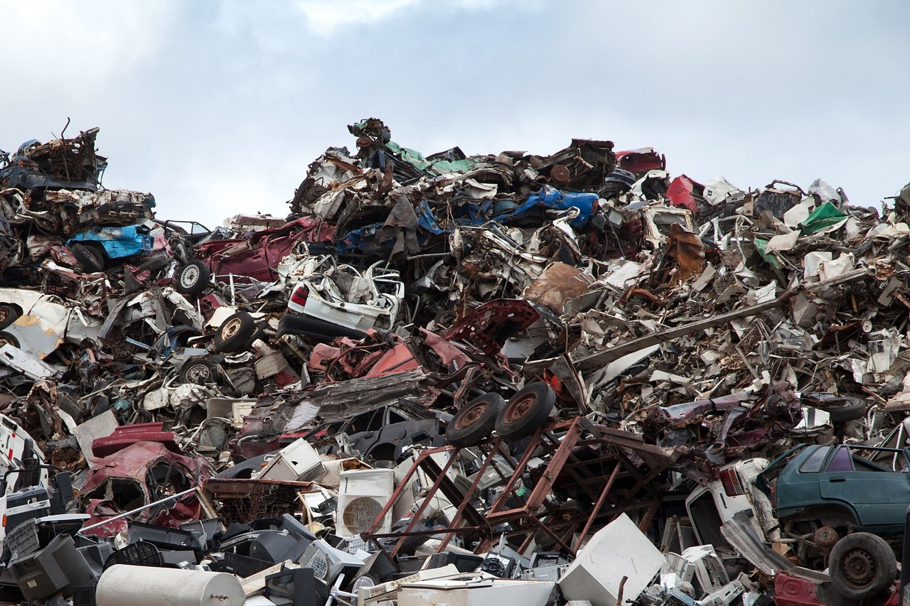
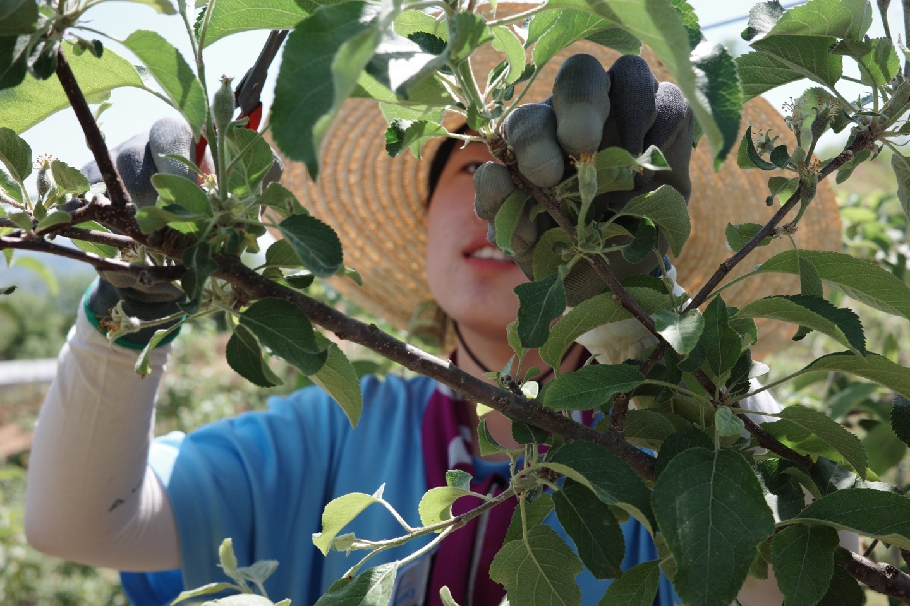

GreenSeum
strives to protect
the global environment.
'세계가 플라스틱 쓰레기 위기의 한가운데 있다!'
많은 쓰레기들과 기후 위기는 별개의 사안이 아닙니다.


우리는 기후 위기 시대에 살고 있습니다.
과잉 생산과 소비로 1인당 쓰레기 배출량이 점점 늘어가면서
쓰레기 매립과 소각 과정에서 발생하는 메탄가스와 이산화탄소 등의 온실가스들이 늘어가고 있고
무분별로 버려진 쓰레기들이 바다에서 섬을 만드는 등
우리가 살고 있는 지구는 점점 쓰레기로 뒤덮이고 있습니다.
쓰레기로 뒤덮인 지구는 온도가 상승하고 매년 기록을 경신하는 폭염과 폭우, 때아닌 폭설 등이 발생하며 기후 위기를 실감하게 합니다.
이런 문제들을 해결하기 위해 우리는 쓰레기 소비량을 줄이고
개인이 실천할 수 있는 가장 쉬운 방법인 분리배출을 올바른 방법으로 실행하는 것부터 시작한다면
다가올 기후 위기를 조금이라도 늦출 수 있을 것입니다.
지구를 위해, 정확한 쓰레기 분리 배출 방법을 알아갑시다!

1995년 쓰레기 종량제와 분비배출 제도가 생겼지만,
아직도 종량제 봉투 속 쓰레기의 70%는 잘못된 방법으로 분리배출되고 있습니다.
정확한 분리배출 방법을 알고 자원을 아끼며 살아갑시다!
활동, 캠페인 소개
2024 전국 대학생 여름농활
2024.06.30~2024.07.04 4박 5일간
충청도, 강원도, 제주도로!
각자도생 갠플의 시대에 '함께'라는 소중한 경험하는 농활 함께가요!
